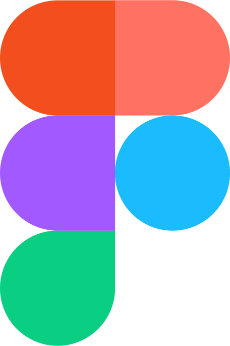
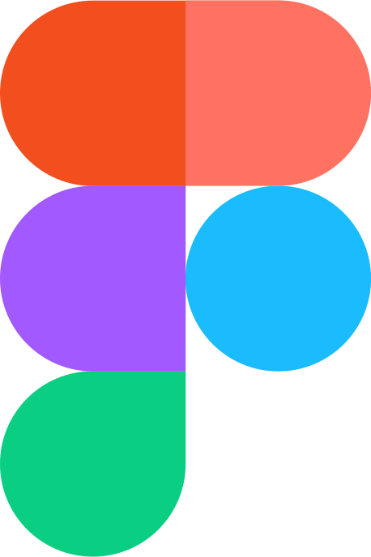
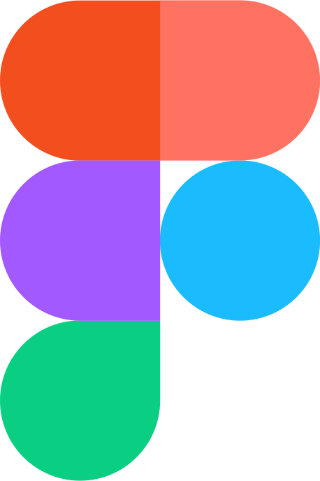
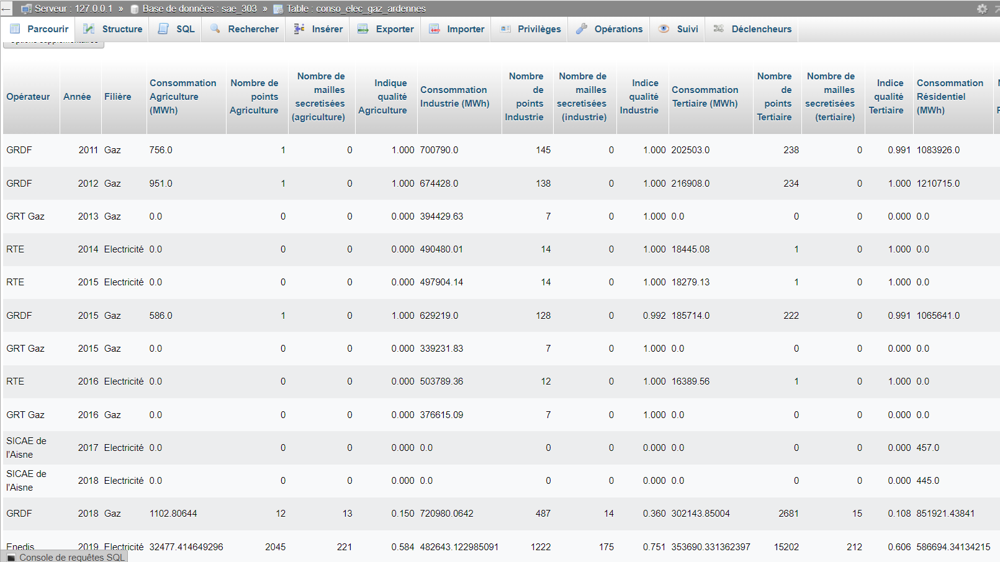
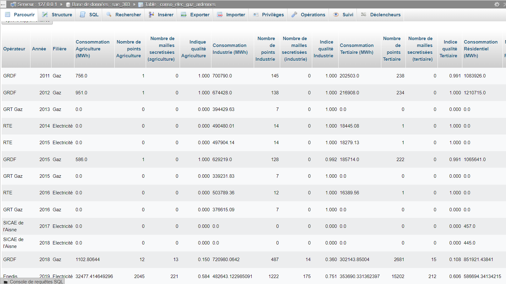

Je suis un étudiant dynamique en troisième année de Bachelor Universitaire de Technologie (BUT) Métiers du
Multimédia et de l'Internet (MMI) à l'IUT de Rouen. Passionné par les nouvelles technologies et l'art, je
m'investis dans des projets
personnels et collabore sur diverses initiatives pour affiner mes compétences techniques et
créatives.
Dans le cadre de ma troisième année, je suis actuellement en recherche d'une alternance
pour l'année 2024.
Je suis doté d'un esprit créatif, ayant le sens du relationnel et étant polyvalent dans tous les domaines du multimédia, je m'adapte à toute situation pour mener à bien les projets.
Voir le CV



Projet de site Web de visualisation de données avec ChartJS, PHP, MySQL.
Développement Web
Projet de réalisation et mise en scène d'un court métrage dit "Film noir".
Audiovisuel
Projet de création d'identité visuelle pour un skatepark .
Création numérique
Réalisation de l'introduction de la série "Breaking Bad".
Audiovisuel
Projet de site web dynamique de gestion de tickets de support d'une application.
Développement Web
Quelques créations sous le logiciel Adobe Photoshop.
Création numérique
Lors de ma deuxième année de Bachelor Universitaire de Technologie Métiers du Multimédia et de l'Internet, j'ai été amené à réaliser une page web de dashboard (Tableau de bord en français), affichant des visualisations de données à l'aide de graphiques interactif. Ce projet m'a permis de mettre en oeuvre des compétences de traitement, et d'intégration de données afin d'avoir un affichage simple et compréhensible facilement. J'ai également pu mettre en oeuvre des compétences de création de site web dynamiques, avec des intéraction utilisateurs.
Les données correspondent à la consommation et production d'énergie, de la région Grand-Est, et du département de l'Ardennes. Le site à été réalisé principalement en PHP, MySQL, stylisée avec du CSS. Les graphiques sont réalisé à l'aide d'une bibliothéque JavaScript nommée Chart.JS.
 

Durant ma première année de Bachelor Universitaire de Technologie Métiers du Multimédia et de l'Internet, j'ai été amené à réaliser et mettre en scène un court métrage sur le logiciel Adobe Première Pro., sous le nom de "Film noir".
Ce projet m'a permis de mettre en oeuvre les compétences audiovisuelles que j'ai acquérie au cours de ma première partie de l'année, que ce soit la prise d'image et de son, l'organisation du tournage, l'écriture, le storytelling mais également le montage vidéo.
Lors d'une SAE (Situation d'Apprentissage et d'Evaluation) de ma deuxième année de Bachelor Universitaire de Technologie Métiers du Multimédia et de l'Internet, j'ai été amené à réaliser une identité visuelle d'un skatepark fictif.
Ce projet


Durant notre deuxième année, nous avons été amené à reproduire l'introduction de la fameuse série "Breaking Bad". Cette production a été réalisé avec le logiciel Adobe After Effects.
Lors d'une SAE (Situation d'Apprentissage et d'Evaluation) de ma deuxième année de Bachelor
Universitaire de Technologie Métiers du Multimédia et de l'Internet, j'ai été amené à réaliser un site web
dynamique de gestion de ticket de supports, c'est à dire les différents problèmes que les utilisateur relèvent
d'un projet.
Ce projet comportait 3 parties :
Le Testeur déclare les bugs rencontrés lors de l’usage du programme ou du jeu et a accès à
l’évolution du traitement de ses demandes.
Le Développeur prend en charge le bug qui lui est attribué et met à jour l’avancement du
traitement jusqu’à sa clôture.
L'Admin reçoit une notification par mail du dépôt d’un bug, attribue le bug à un développeur et
accès à toutes les informations concernant tous les bugs.
Durant notre deuxième année, nous avons été amené à reproduire l'introduction de la fameuse série "Breaking Bad". Cette production a été réalisé avec le logiciel Adobe After Effects.